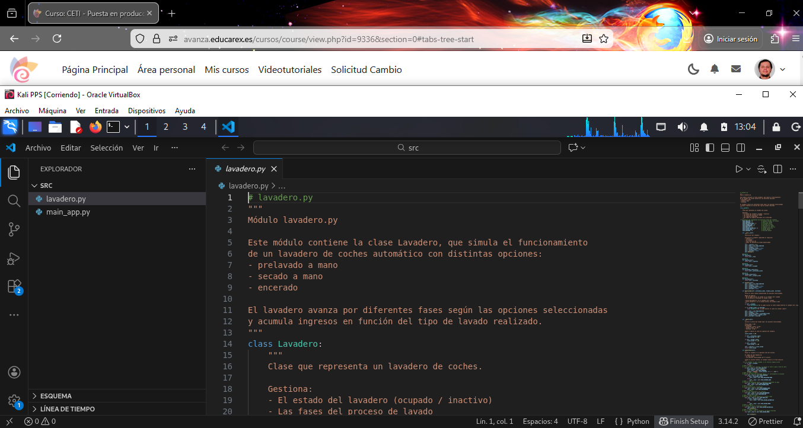

1. Documentación del programa¶
En este apartado se documenta el código fuente de la aplicación Lavadero, cuyo objetivo es simular el funcionamiento de un lavadero de coches automático con distintas opciones de lavado.
La documentación se ha realizado siguiendo buenas prácticas de programación, con comentarios claros y explicativos directamente en el código, así como documentación adicional mediante un cuaderno Jupyter.
1.1 Comentarios en el código fuente¶
Se han añadido comentarios detallados en el archivo lavadero.py para explicar:
- La finalidad de la clase
Lavadero - El significado de cada constante de fase
- El comportamiento de los métodos principales (
hacerLavado,_cobrar,avanzarFase) - Las reglas de negocio impuestas por el enunciado
- Las decisiones de flujo entre fases
Estos comentarios permiten comprender el funcionamiento interno del programa sin necesidad de ejecutar el código.
Código comentado en Visual Studio Code

Archivo lavadero.py (estado final corregido):
1.2 Documentación mediante Jupyter Notebook (estado inicial lavadero.py)¶
Como apoyo adicional, se ha creado un cuaderno Jupyter Notebook donde se explica:
- Pruebas unitarias de la aplicación
- Simulación
Este formato facilita una comprensión más visual y didáctica del programa.
Notebook visualizado en el navegador

Notebook del proyecto: